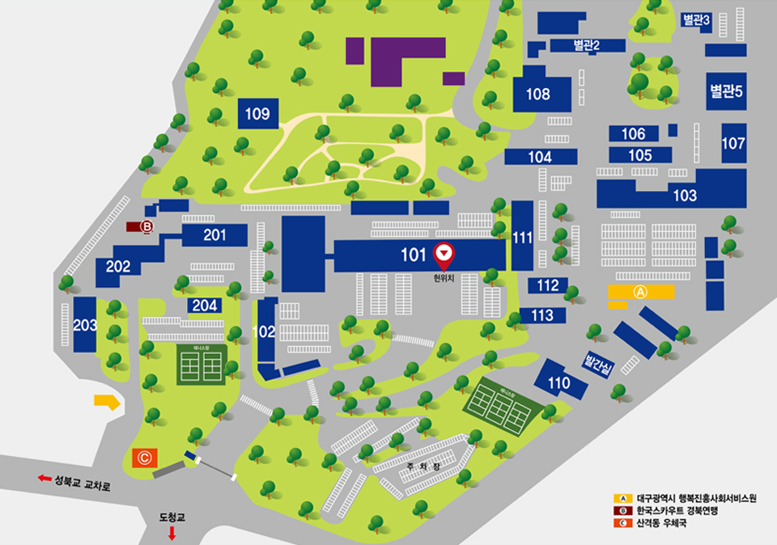

두드리소(민원신청)
공익제보
행정서비스 현장
시민참여
주소 : (41542) 대구광역시 북구 연암로 40(산격동)

(2025. 7. 10. 현재)
| 101동 | 6층 | 청사관리2팀 |
|---|---|---|
| 5층 | 경제정책자문관 / 금융자문관 / 금융협력관 / 미래혁신정책관실 / 광역협력담당관 / 법무담당관 / 예산작업장 / 의료산업과 / 에너지산업과 / ABB산업과 | |
| 4층 | 기획조정실장 / 정책기획관 / 정책기획관실 / 예산담당관 / 세정담당관 / 평가통계담당관 / 창업벤처혁신과 / 산단진흥과 / 사진영상실 / 건강관리실 | |
| 3층 | 시장실 / 경제부시장실 / 국제관계대사 / 맑은물하이웨이추진단장 / 미래혁신성장실장 / 행정국장 / 경제국장 / 대구경북행정통합추진단장 / 미래혁신정책관 / 법제자문관 / 제1대회의실 | |
| 2층 | 원스톱기업투자센터장 / 교통국장 / 경제정책관 / 신공항건설추진단(이전보상과, 공항건설지원과) / 기계로봇과 / 섬유패션과 / 농산유통과 / 도로과 / 제5회의실 / 정보통신2센터 / 마음의쉼터(심리상담실) / 민생회복 소비쿠폰(T/F) | |
| 1층 | 교통정책과 / 버스운영과 / 기후환경정책과(기후환경기획팀, 탄소중립팀, 생활환경팀, 자연생태팀) / 행복민원실분소 / 문서실 / 영상회의실 / 제1회의실 / 제2회의실 / 제3회의실 / 제4회의실 / 대강당 / 기사송고실 / 청원경찰대상황실 / 휴게실 / IM뱅크 | |
| 102동 | 대구경북행정통합추진단 / 대구스마트쉼센터 / 농협은행출장소 | |
| 103동 | 4층 | 자원순환과 / 공원조성과 / 민원상담실 / 안전정책관(재난안전기동팀) |
| 3층 | 기후환경정책과(대기관리팀, 대기개선팀) / 물환경과 / 도시건설본부 조경과 / 오존상황실 / 하수전산실 | |
| 1~2층 | 도시건설본부 | |
| 104동 | 2층 | 택시물류과 / 교통정책과(주차계획팀, 주차관리팀) |
| 1층 | 민주평화통일자문회의실 | |
| 105동 | 3층 | 안동댐상수원개발과 / 서대구역세권개발과 / 신천개발과 |
| 2층 | 민생경제과 / 금호강개발과 | |
| 1층 | 도시디자인과 / 물가종합상황실 | |
| 106동 | 철도시설과 | |
| 110동 | 지능정보화담당관 / 제6회의실 | |
| 110동 앞 | 발간실 | |
| 111동 | 5층 | 재정전략추진단(T/F) / 고용노동정책과 / 농산유통과(식품수출팀) |
| 4층 | 기업지원과 / 투자유치과 / 120달구벌콜센터 / 통신실 | |
| 3층 | 신공항건설단장 / 환경수자원국장 / 신공항정책국장 / 신공항건설국장 / 공항정책관 / 공항건설총괄과 / 공항건설설계과 / 행정과 | |
| 2층 | 총무과 / 인사혁신과 / 국제통상과 | |
| 1층 | 회계과 / 공항도시과 / 맘케어오피스 / 제7회의실 / 북카페 | |
| 102동 | 미래모빌리티과 / 도시공간개발과 | |
| 113동 | 3층 | 대학정책과 / 대학인재과 |
| 2층 | 군사시설이전특보 / 군사시설이전정책관 / 대학정책국장 / 국회협력관 | |
| 1층 | 신청사건립과 / 군부대이전정책과 / 미군부대이전과 | |
| 별관2 | 자치경찰위원회 / 감사위원회 / 복지·인권옴부즈만실 | |
| 별관3 | 2층 | 스마트워크센터 / 전세피해지원센터 |
| 1층 | 작은도서관 | |
| 별관5 | 3층 | 건설산업과 / 면접시험장 / 소통민원과 |
| 2층 | 도시주택국장 / 도시계획과 / 도시정비과 | |
| 1층 | 건축과 / 주택과 / 토지정보과 / 민원대기실 | |
민원실 안내